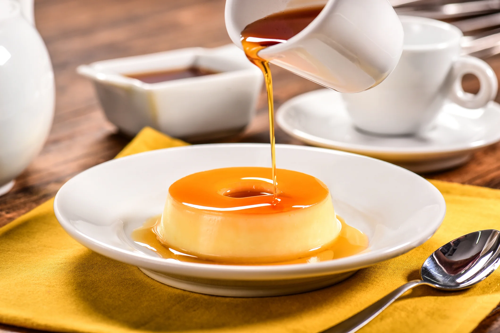
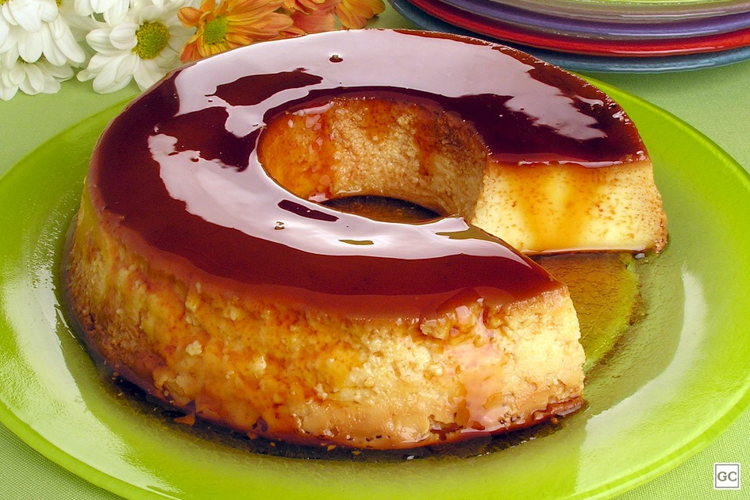

pudim.com.br
Sem menu, sem cadastro, sem newsletter. Só uma foto de pudim e um e-mail. Esta é uma releitura moderna e responsiva do clássico da internet brasileira — com a mesma ideia, um pouco mais de espaço para respirar.
História
O pudim.com.br nasceu como uma brincadeira: um domínio comprado sem grandes planos e uma única página no ar, com uma foto de pudim e um endereço de contato. Nada de portfólio, nada de produto para vender.
Justamente por isso, o site virou piada interna do público brasileiro na internet. Ele passou a ser compartilhado como exemplo de site perfeito: carrega rápido, funciona em qualquer navegador, nunca sai do ar por excesso de recursos e nunca pede seus dados.
A lição de design é séria, mesmo vindo de uma piada: uma página cumpre seu papel quando tem uma ideia só e a comunica sem ruído. Esta versão mantém esse princípio e apenas adiciona o que faltava para navegar com conforto no celular.

1 página
era todo o site original
0 pop-ups
e é isso que todo mundo elogia
Receita clássica
Faça a calda: leve o açúcar ao fogo médio em uma panela, sem mexer, até derreter e ficar dourado. Junte a água quente com cuidado, misture e despeje na forma de pudim, cobrindo o fundo e as laterais.
Bata no liquidificador o leite condensado, o leite e os ovos por cerca de 2 minutos. Passe a mistura por uma peneira para o pudim ficar liso.
Despeje na forma caramelizada, cubra com papel-alumínio e asse em banho-maria a 180 °C por cerca de 1 hora e 10 minutos, até firmar. Um palito deve sair limpo.
Espere esfriar e leve à geladeira por no mínimo 4 horas antes de desenformar. A paciência aqui é o segredo: pudim morno desmancha.
Contato
Sem formulário de dez campos, sem captcha. Se quiser falar de pudim, escreva.
contato@pudim.com.brEndereço fictício, criado para este trabalho escolar.